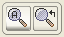

| World Map | |
When working with satellite data, it is often not obvious at first sight which region of the world is covered by the data product. To facilitate finding the location of the product on Earth, VISAT provides a World Map tool window which displays the product boundary on a Plate Carrée map.
 To invoke the World Map simply click on the globe icon in the main
toolbar or select World Map from the 'View/Tool Windows' sub-menu.
This will open the tool window shown below.
To invoke the World Map simply click on the globe icon in the main
toolbar or select World Map from the 'View/Tool Windows' sub-menu.
This will open the tool window shown below.

To zoom in and out, simply use the mouse wheel.

To zoom to the currently selected product use the button on the right side.
The button on the left side zooms out to display the whole world.
Note: The owner of the used world map image is the NASA and it can be obtained at http://visibleearth.nasa.gov.